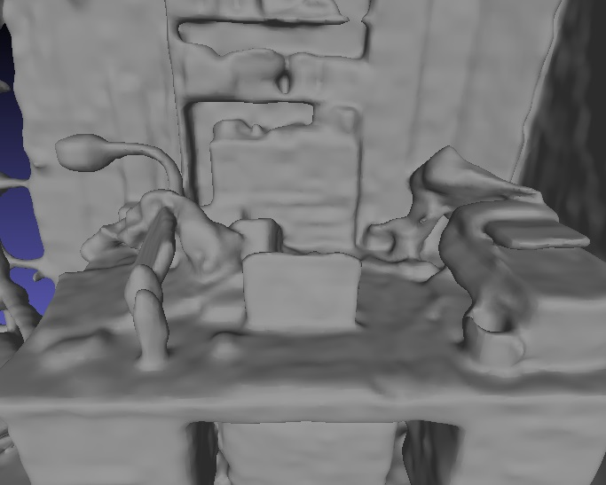
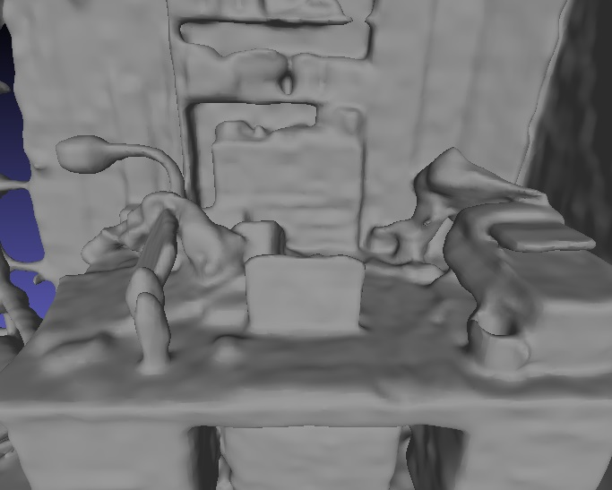

Our method proposes per-frame intrinsic refinement and classical TSDF Fusion prior learning schemes for fast and high-quality 3D surface reconstruction.
We introduce FastSurf, an accelerated neural radiance field (NeRF) framework that incorporates depth information for 3D reconstruction. A dense feature grid and shallow multi-layer perceptron are used for fast and accurate surface optimization of the entire scene. Our per-frame intrinsic refinement scheme corrects the frame-specific errors that cannot be handled by global optimization. Furthermore, FastSurf utilizes a classical real-time 3D surface reconstruction method, the truncated signed distance field (TSDF) Fusion, as prior knowledge to pretrain the feature grid to accelerate the training. The quantitative and qualitative experiments comparing the performances of FastSurf against prior work indicate that our method is capable of quickly and accurately reconstructing a scene with high-frequency details. We also demonstrate the effectiveness of our per-frame intrinsic refinement and TSDF Fusion prior learning techniques via an ablation study.
We compare our method with GO-Surf and Neural RGB-D at different points in time. The comparison was conducted using ScanNet. When trained for a shorter amount of time, FastSurf recovers high-frequency details overlooked by GO-Surf and generates much less erroneous surfaces. Given a longer training time, FastSurf achieves a quality on par with that of Neural RGB-D, but at a significantly shorter amount of time (×7.7 faster on average). It also fixes the errors caused by the camera motion.
 

@article{Lee_2023_arXiv,
title={FastSurf: Fast Neural RGB-D Surface Reconstruction using Dense Feature Grid and Per-Frame Intrinsic Refinement},
author={Lee, Seunghwan and Park, Gwanmo and Son, Hyewon and Ryu Jiwon and Chae, Han Joo},
journal={arXiv preprint arXiv:0000.00000},
year={2023}
}